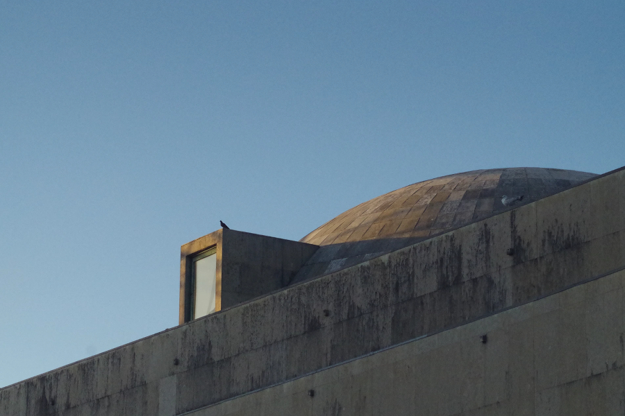
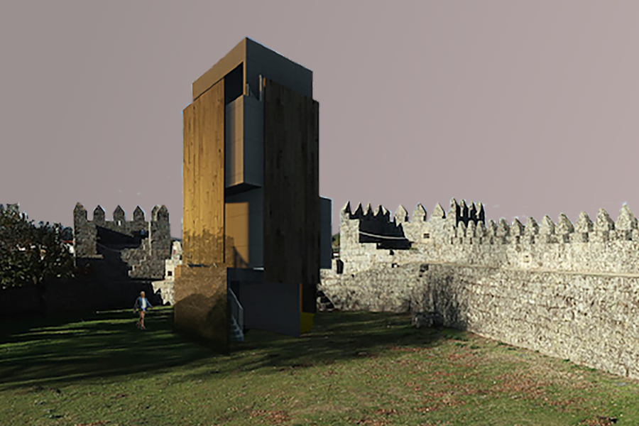
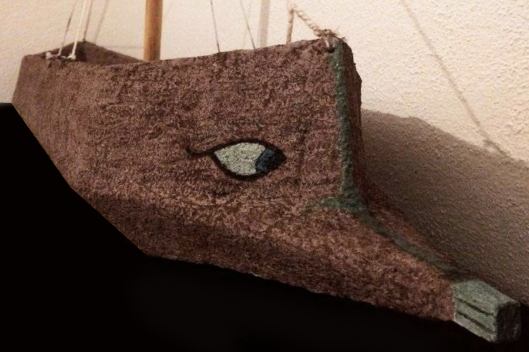
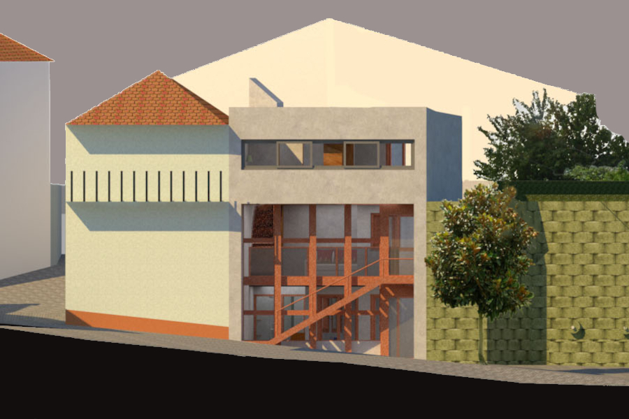
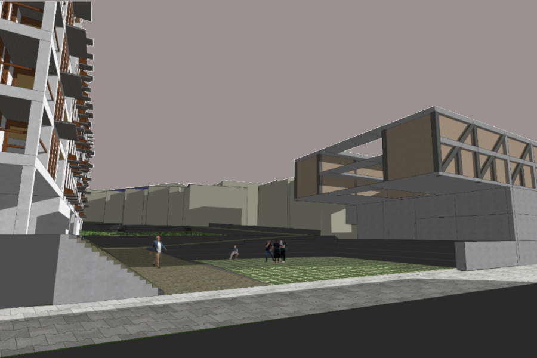
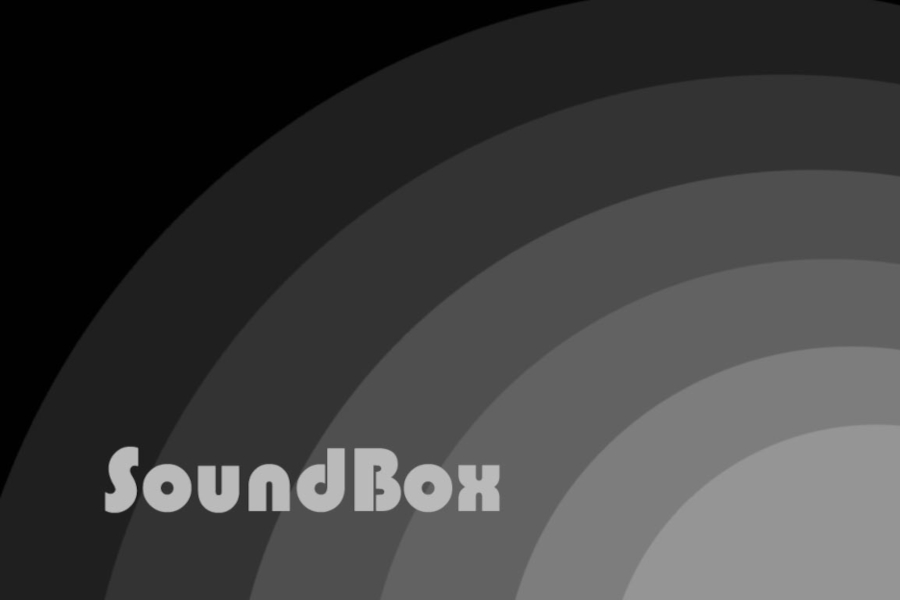
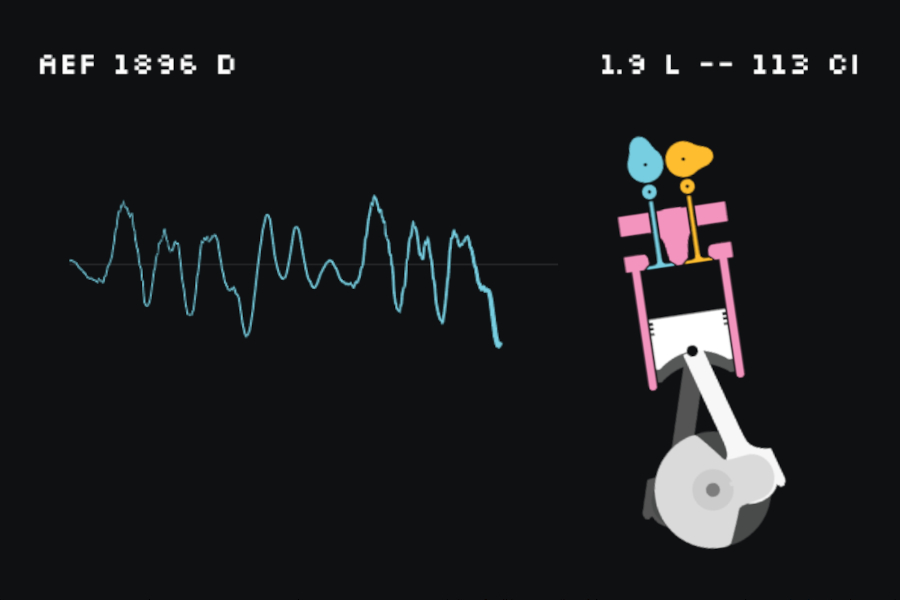

Gruta de Arte

Bancada de Terra

Torre de Menagem em Terra

Barcos de Papel Flutuantes

Ponte Educativa

Alojamento e Studio para Artistas

Alojamento Social e Temporário

Várias Experiências com Papel

Enterro da Arte

SoundBox

Moon Camp Challenge

Reabilitação de Stavros

'Programei' um Motor